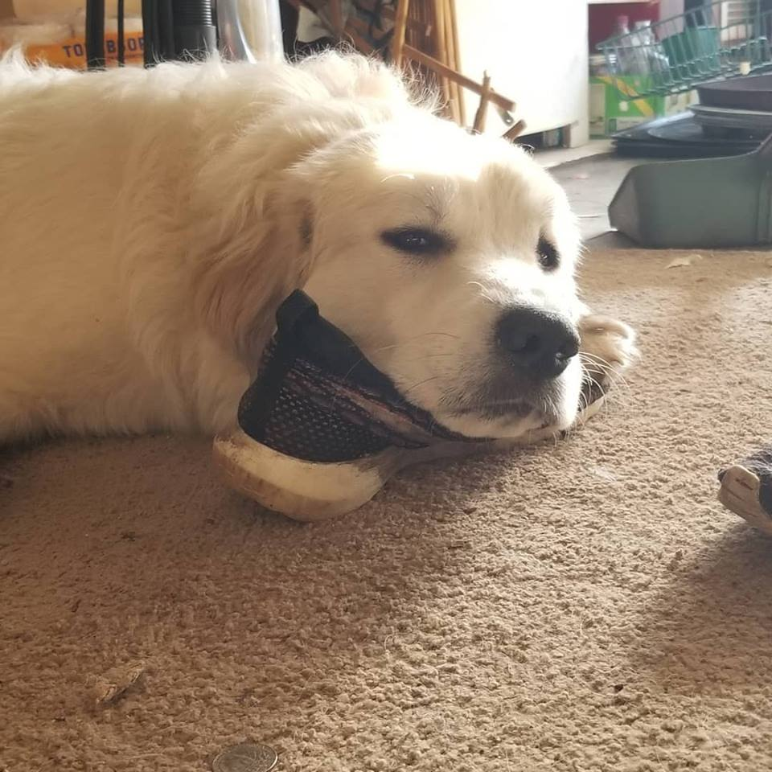
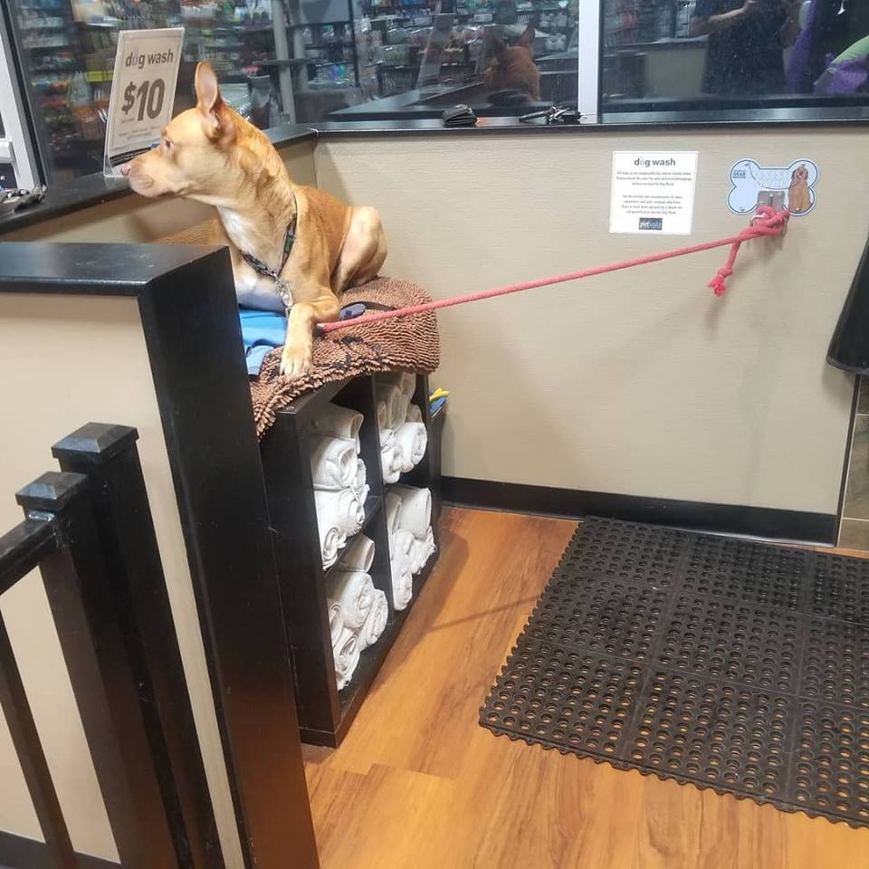

Where I'm From
I grew up in Winchester, Kentucky. I moved to Lexington when I began my studies at the University of Kentucky in 2014 and I have been here ever since.
General
I earned my Eagle Scout award in 2014 after being involved with the Boy Scouts since the 5th grade. I graduated from UK in December of 2018 with my Bachelor's in Computer Science. I enjoy Ale-8, golfing, music, and all of my animals. My partner, Megan, and I have 2 dogs, 4 cats, 3 ferrets, and 2 snakes. My ambitions include providing a loving home for my family, to travel across the world, to continue to expand my knowledge about anything.
Daisy, our 1 year old Great Pyrenees
Gabriel, our 2 year old Pit/Shepherd Mix
Hobbies
I spend my time playing video games or watching a stream. The games I have been playing recently are Old School Runescape, Dirt Rally, and Kerbal Space Program. I sometimes stream my endeavors on these games. You can see more about that in the Social Media/Contact tab.